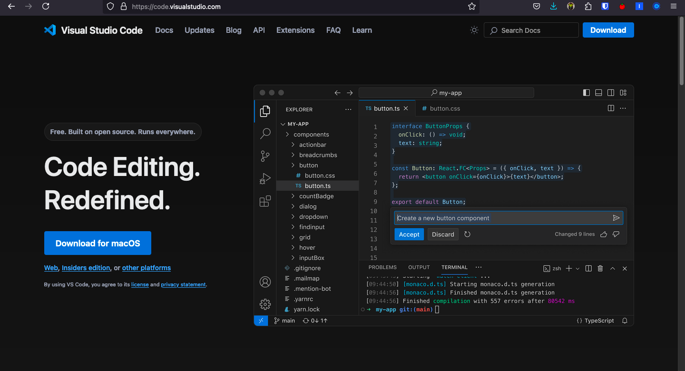
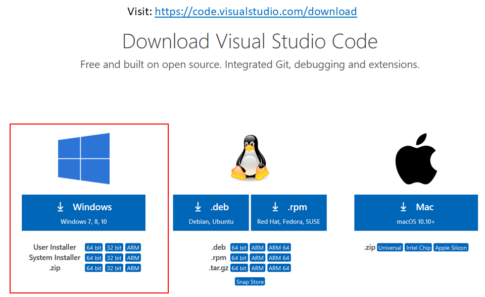
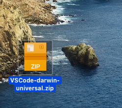
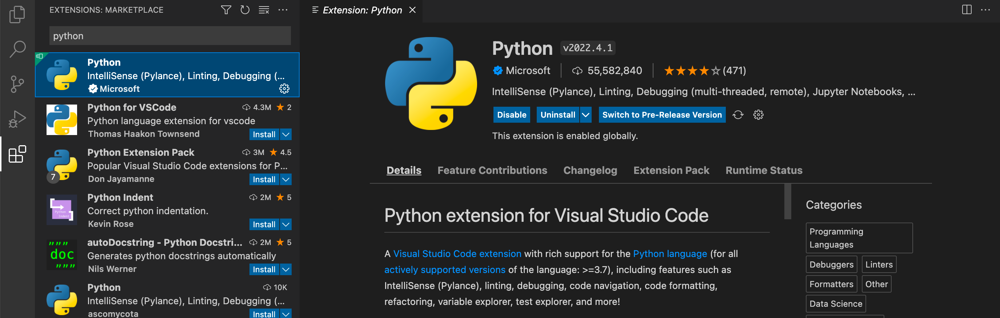
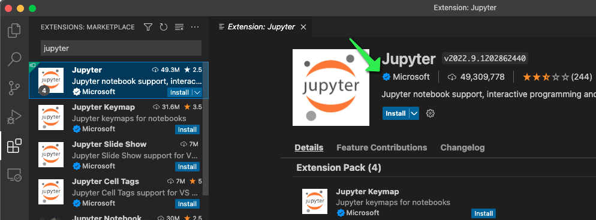
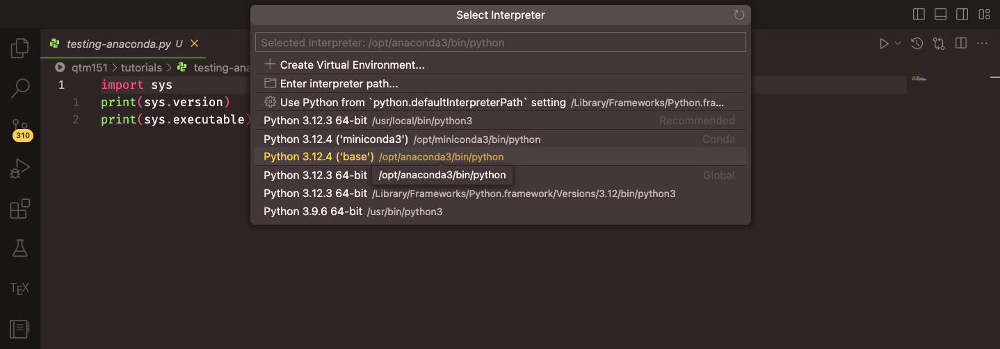
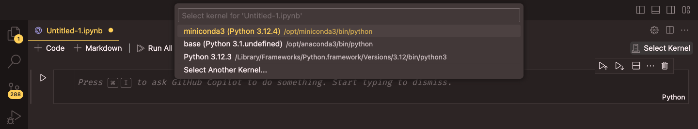
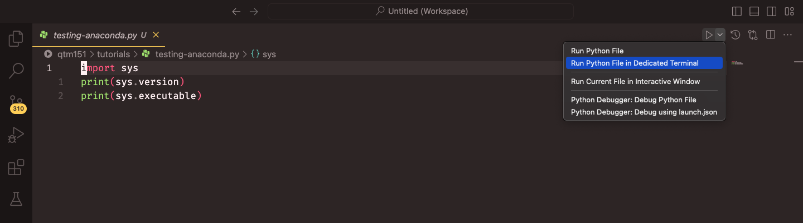
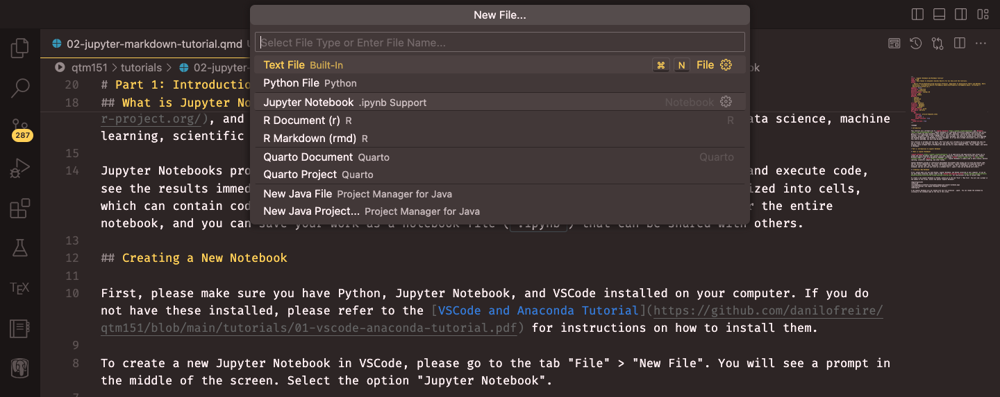

Lecture 6: Your Own Python Setup
BAA1118 - Foundations of Programming for Analytics & AI
For Today
Requirements
- ✅ A laptop, charged, with administrator rights
- ✅ The Python and VS Code installers downloaded, if possible
- ✅ Functions, loops and conditions
Programme
- Why leave Colab
- Installing Python and VS Code
- Virtual environments
- Scripts, notebooks and projects
- Files, paths and the four formats
- Reproducibility and version control
Any questions?
Today Is Different
- Very little new Python
- A lot of installing, clicking and troubleshooting
- Things will go wrong on some machines, and that is the point of doing it together
By the end of this lecture, everyone runs Python on their own laptop, in an environment they built themselves. Weeks 7 to 10 assume it.
1. Why Leave Colab
What Colab Gave Us
- Zero installation
- Identical environment for everyone
- Free computing power
What Colab Costs
- Your files are not really yours: they live in Google Drive, in Google’s format
- The runtime disconnects, and everything is lost
- Reading a file from your own computer is awkward
- No project structure: everything is one notebook
- You cannot run a script on a schedule, or hand it to a colleague
- You never learn where packages come from
The Professional Setup
| Colab | Local | |
|---|---|---|
| Install | none | 30 minutes, once |
| Your data | uploaded each time | on your disk |
| Version control | painful | built in |
| Big files | slow | instant |
| Opening your own file | mount, upload or a URL | pd.read_csv("data/x.csv") |
| Package versions | Google decides | you decide |
| Employability | “I used a website” | “I have an environment” |
Colab remains excellent for teaching, quick tests, and sharing. It is not where analysis lives.
The Reason, In Two Slides
Last week you learned three ways to open a file in Colab. Here is the best of them:
- Three lines, one of them interactive
- A path that describes Google’s filesystem, not yours
- Your data has to be in Drive
- And it breaks the moment somebody else runs your notebook
The Reason, In Two Slides
Here is the same thing once Python is on the machine where the file already is:
Important
That is the entire argument for today. Everything else, the environment, the folder structure, the version control, follows from putting Python next to your data instead of in somebody else’s data centre.
Two hours of installation buys you that one line, for every file, for the rest of your career.
2. Installing Python and VS Code
The Two Things to Install
- Python itself, from python.org: the language, and
pipto install packages - VS Code, from code.visualstudio.com: the editor where you will write
That is the whole stack. Two downloads, no bundle, nothing hidden.
Why Not Anaconda?
Anaconda is a legitimate and very common choice. It installs Python, conda, Spyder, JupyterLab and 1,500 packages in one go.
We are not using it, for four reasons:
- You learn nothing about where your packages come from
- 1 GB of packages you will never open, and a slow
condaresolver - Its commercial licence now restricts use in larger organisations, so your employer may not allow it
pipandvenvare what every Python project on GitHub actually uses
If You Already Have Anaconda
Keep it. You do not have to uninstall anything. Everything today has a conda equivalent:
| This module | Anaconda equivalent |
|---|---|
python -m venv .venv |
conda create --name baa1118 python=3.12 |
source .venv/bin/activate |
conda activate baa1118 |
pip install pandas |
conda install pandas |
pip freeze > requirements.txt |
conda env export > environment.yml |
Mixing the two in one environment causes strange breakages. Pick one per project and stay with it.
Installing Python
- Go to python.org/downloads
- Take Python 3.12 or 3.13, not the newest release: some packages take months to catch up
- Run the installer
Important
Windows: tick “Add python.exe to PATH” on the first screen. That single unticked checkbox is the cause of most week-6 problems in every university on earth.
macOS: after installing, double-click Install Certificates.command in the Python folder in Applications, or downloading files will fail later.
Checking Python Installed
Open a terminal: PowerShell on Windows, Terminal on macOS.
You should see Python 3.12.x or 3.13.x.
- On Windows the command is
python, andpyalso works - On macOS and Linux it is
python3: plainpythonmay not exist at all - These slides write
python. Typepython3if that is your machine.
macOS: Do Not Use the System Python
macOS ships with its own Python at /usr/bin/python3. It belongs to Apple, and it is there for the operating system.
If that prints /usr/bin/python3, you are using Apple’s. Installing packages into it can break system tools and will be wiped by the next macOS update.
The virtual environment we build in the next section makes this problem disappear, which is one more reason to build one.
Installing VS Code

Source: Danilo Freire, DATASCI 151 course tutorials
Installing VS Code
Windows

macOS

On Windows, tick “Add to PATH” when offered. On macOS, drag the app into Applications. Source: Danilo Freire, DATASCI 151.
The Three Extensions
Open VS Code, click the Extensions icon in the left bar (four squares), and install:
- Python (Microsoft): interpreter selection, linting, running files
- Jupyter (Microsoft): notebooks inside VS Code
- Ruff (Astral): fast formatting and error checking as you type
Restart VS Code once they are installed.
The Two That Matter Most


Source: Danilo Freire, DATASCI 151 course tutorials
Your Turn: Install and Verify
- Install Python from python.org, ticking Add python.exe to PATH on Windows
- Install VS Code, then the Python, Jupyter and Ruff extensions
- Open a terminal and run
python --version(orpython3 --version) - Run
python -m pip --version. Does it point at the Python you just installed? - Help your neighbour. Nobody moves on alone.
When It Does Not Work
| Symptom | Usual cause |
|---|---|
python: command not found |
PATH checkbox missed, or terminal not restarted |
python opens the Microsoft Store |
Windows alias; use py or reinstall with PATH |
| Version says 2.7 or 3.9 on macOS | you are on Apple’s system Python |
pip: command not found |
use python -m pip instead |
| Installer will not run | not an administrator, or a locked work machine |
The last one is not solvable in a lecture. If your machine is locked down, stay on Colab and see me afterwards.
3. Virtual Environments
The Problem
You install pandas for this module. In March you install an older pandas for a group project. Now this module’s notebooks break.
- One Python installation has one set of packages
- Two projects needing different versions cannot both work
- Installing something for a tutorial can silently break work from last month
- And you have no record of what any project actually needs
The Solution
A virtual environment is a private set of packages for one project.

Source: Neuroinformatics Unit, UCL, Introduction to Python
What It Actually Is
No magic. It is a folder.
- Created in seconds, deleted by deleting the folder
- Nothing else on your machine is touched
- If it ever gets confusing: delete it, make a new one, reinstall. That is a normal thing to do.
Creating One
In your project folder, in a terminal:
python -m venvruns thevenvmodule of the Python you just named.venvis the folder name, and it is a strong convention: VS Code looks for it, and everyone recognises it- The leading dot hides it from your file browser
Do this once per project, not once per machine.
Activating It
The environment exists, but your terminal is not using it yet.
Your prompt changes:
That (.venv) is the whole point. No (.venv), no environment.
Windows Will Refuse the First Time
PowerShell
Run this once, then activate again:
To leave an environment, from anywhere:
Installing Into It
With (.venv) showing:
Terminal
python -m piprather than barepip: it installs into the interpreter you just named, never into some other one you forgot aboutipykernelis what lets a notebook use this environment. Forget it and your notebook silently runs the wrong Python.
Where Did That Actually Go?
The single most useful debugging command in Python:
Telling VS Code
VS Code has to be pointed at the environment twice: once for scripts, once for notebooks.
- Ctrl/Cmd + Shift + P, then
Python: Select Interpreter - Choose the one showing
.venvand('.venv': venv)

Source: Danilo Freire, DATASCI 151 course tutorials
Telling VS Code, Part Two
In a notebook, top right: Select Kernel, then the same .venv.

Source: Danilo Freire, DATASCI 151 course tutorials
The interpreter and the kernel are two separate settings. This surprises everyone once.
The Three Symptoms of a Wrong Environment
ModuleNotFoundErrorfor something you just installed. You installed into a different Python than the one running your code.- It works in the terminal but not in the notebook. The kernel is not your
.venv, oripykernelis missing from it. pipputs things somewhere unexpected. Barepipmay belong to another installation.
All three have the same diagnosis, and it takes five seconds:
Run it in the notebook. If that path does not contain .venv, you have found your bug.
Recording What You Used
requirements.txt
Anyone, on any machine, can now rebuild your environment exactly:
Pinning, Loosely or Exactly
Important
An analysis whose results depend on the package version and does not record it is not reproducible. pip freeze is one command, and it is the difference between “it worked in September” and “here is exactly what I ran”.
Commit requirements.txt. Never commit .venv/.
One Project, One Environment
- One folder per project
- One
.venvinside it - One
requirements.txtbeside it - Activate when you start work,
deactivatewhen you finish
If you only remember one slide from today, this is it.
Two Alternatives Worth Knowing By Name
- conda / miniforge: manages non-Python dependencies too (GDAL, CUDA, R). Worth it for geospatial work or deep learning, overkill here.
- uv: a much faster drop-in replacement for
pipandvenv, written in Rust, spreading quickly through industry.uv venv,uv pip install. Same concepts, ten times the speed.
The ideas you learn today transfer to all of them: an isolated set of packages, a record of what is in it, and knowing which Python is running.
Your Turn: Build Your Environment
- Create a folder
BAA1118and open it in VS Code withFile -> Open Folder - In VS Code’s terminal, create and activate
.venv. Confirm you see(.venv). - Install
pandas,matplotlib,seaborn,statsmodels,scikit-learn,jupyterandipykernel - Run
python -c "import sys; print(sys.executable)". Does the path contain.venv? - Select the interpreter in VS Code, then create
test.pywithimport pandas as pd; print(pd.__version__)and run it - Freeze a
requirements.txt
Solution
Terminal
If step 5 gives ModuleNotFoundError: pandas while the terminal install clearly worked, VS Code is running a different interpreter. Reselect it, and check sys.executable from inside the file.
4. Scripts, Notebooks and Projects
.py vs .ipynb
.py script
Plain text, only code. Runs from top to bottom, every time, in order.
Good for: reusable tools, automation, anything another program will run.
.ipynb notebook
Code, text and output together, run cell by cell.
Good for: exploration, analysis, teaching, reports.
For this module: notebooks for analysis, scripts for functions you reuse.
Running a Script

Source: Danilo Freire, DATASCI 151 course tutorials
From a terminal, which is what a server or a colleague will do. Open one inside VS Code with View -> Terminal, or Ctrl+` on both Windows and Mac:
cd changes directory, cd .. goes up one. dir lists files on Windows, ls on macOS and Linux. On Windows the file is run with python test.py, on macOS with python3 test.py unless your .venv is active, in which case python is correct on both.
Notebooks in VS Code

File -> New File -> Jupyter Notebook, then Select Kernel and choose your .venv. Source: Danilo Freire, DATASCI 151.
Notebook Shortcuts
| Action | Windows / Linux | Mac |
|---|---|---|
| Run cell, move on | Shift+Enter | Shift+Enter |
| Run cell, stay | Ctrl+Enter | Cmd+Enter |
| Insert above / below | Esc then A / B | Esc then A / B |
| Turn cell into text | Esc then M | Esc then M |
| Delete cell | Esc then D D | Esc then D D |
Note
Not quite the same as Colab. Running cells is identical, but Colab puts its cell commands behind Ctrl/Cmd+M, while VS Code uses Esc to leave the cell first. Same idea, one key different.
VS Code Shortcuts Worth Knowing
| Action | Windows / Linux | Mac |
|---|---|---|
| Command palette | Ctrl+Shift+P | Cmd+Shift+P |
| Open / close terminal | Ctrl+</kbd> | <kbd>Ctrl</kbd>+<kbd> |
|
| Open a folder | Ctrl+K Ctrl+O | Cmd+O |
| Save | Ctrl+S | Cmd+S |
| Comment / uncomment | Ctrl+/ | Cmd+/ |
| Find in all files | Ctrl+Shift+F | Cmd+Shift+F |
The terminal one is the one to learn today. Ctrl+</kbd> is the same key on both, it opens **inside your project folder**, and it is already using your.venv`.
The full list, with your own bindings, is File -> Preferences -> Keyboard Shortcuts on Windows and Code -> Settings -> Keyboard Shortcuts on macOS.
Project Structure
One folder per project. Inside it, always the same layout:
This is not bureaucracy. It is what makes an analysis findable in a year.
The Golden Rule of Raw Data
Important
Never edit a raw data file. Not in Excel, not by hand, not “just this once”.
Read it, transform it in code, write the result to data/clean/. If the transformation is wrong, you fix a line and rerun. If you edited the original, it is gone.
Your Turn: A Script and a Notebook
With your .venv active:
- Create
src/functions.pycontaining yourmargin(revenue, cost)function from week 5, with its docstring - At the bottom add
print(margin(1000, 620)), then run the file - Run it again from the terminal with
python src/functions.py - Create
notebooks/week6.ipynb, select your.venvas the kernel, and run:
- Why did the
print()line also run when you imported?
Solution
Importing a module runs the whole file, including the print() at the bottom. That is why reusable code puts its test calls behind a guard:
- Run the file directly: the guard is true, the test prints
- Import it from a notebook: the guard is false, only the function arrives
You will see if __name__ == "__main__": in every Python repository you ever open. That is what it is for.
5. Files, Paths and the Four Formats
Anatomy of a Path
- Root:
/on macOS and Linux,C:\on Windows. Windows has one root per drive. - Folders, separated by
/or\ - File name, and its extension, which is part of the name
- Absolute paths start at the root. Relative paths start wherever Python is standing.
Where Am I Standing?
Every relative path is resolved from that directory. It is not where the file you are editing lives, and it is not where you opened VS Code from last week: it is one specific folder, and Python will tell you which.
Important
When a path fails, print os.getcwd() before you change anything else. Nine times out of ten the path is fine and you are standing somewhere unexpected.
The Notebook-in-a-Subfolder Trap
Your project has the layout from the last section:
In VS Code, a notebook’s working directory is its own folder, so from notebooks/analysis.ipynb:
.. means “the folder above this one”. . means “this one”. Every project with a notebooks/ folder runs into this in its first hour.
Absolute vs Relative
Warning
An absolute path in submitted code is an automatic problem: it cannot run on my machine, so it cannot be marked. Always use relative paths, and open the project folder rather than the file so that “relative to what” has an answer.
The Windows Backslash Problem
Python reads \r as a carriage return and \t as a tab, so the folder names disappear before pandas ever sees them.
Forward slashes work on Windows too. Use them everywhere and the problem stops existing.
Do Not Type Paths. Copy Them.
Every operating system will give you a path, and VS Code will give you the relative one, which is the one you want.
| Where | How |
|---|---|
| VS Code | right-click the file in the Explorer → Copy Relative Path |
| macOS Finder | right-click, hold Option → Copy … as Pathname |
| Windows Explorer | Shift + right-click → Copy as path |
Tip
Windows wraps its copied path in quotes and uses backslashes, so you will still have to tidy it. VS Code’s “Copy Relative Path” needs no tidying at all, which is why it is the one to learn.
Windows Hides Your Extensions
You save sales.csv from Excel. Your folder shows sales. Python cannot find sales.csv, and sales is not a file it can read either.
The file is really called sales.csv.txt, or the extension is simply not being displayed.
Fix it once, permanently: in File Explorer, View → Show → tick File name extensions.
Every Windows user in this room should do that now. It prevents an entire category of wasted afternoon.
macOS hides them too, just more quietly: Finder, Settings... -> Advanced -> tick Show all filename extensions. Do it for the same reason.
Debugging a Path in Four Steps
- Step 2 catches the missing extension and the wrong capitalisation
- Step 3 is the fastest question you can ask
- Step 4 turns your relative path into the absolute one, so you can see where Python looked
pathlib, The Modern Way
data/raw/roasted_daily.csv
.csv
roasted_daily
data/rawPath joins with / regardless of the operating system, and gives you useful methods:
One Path, Defined Once
The pattern worth adopting for your project:
from pathlib import Path
RAW = Path("data/raw")
CLEAN = Path("data/clean")
OUTPUT = Path("output")
daily = pd.read_csv(RAW / "roasted_daily.csv")
stores = pd.read_csv(RAW / "roasted_stores.csv")
daily.to_parquet(CLEAN / "daily.parquet", index=False)
fig.savefig(OUTPUT / "figures" / "revenue.png", dpi=300)Three names at the top of the notebook, and the folder structure appears in exactly one place. Move the project, or restructure it, and you edit three lines rather than thirty.
Never Do This
- It hard-codes your machine into the notebook
- It changes the meaning of every relative path after the line it appears on
- So the notebook works on the second run and fails on the first, or the reverse
If your paths need os.chdir() to work, the real fix is to open the project folder in VS Code and use relative paths from there.
Reading and Writing Text Files
withcloses the file automatically, even if an error occurs"w"overwrites,"a"appends, no letter means read
For CSV files, do not do this. pd.read_csv() does it properly, and that is next.
The Four Formats, Locally
- Same four functions as last week
- Relative paths, from the project folder you opened
- No mounting, no uploading, no pop-up, no
/content/drive/MyDrive/ - And it works identically on my machine when I mark it
Two Packages You Now Have to Install
Colab had them. Your .venv does not.
Read that error properly: pandas is telling you the exact package name to install. This is what “install once per environment, import once per session” looks like when you get it wrong.
The Same Table, Four Ways
format size vs CSV
csv 64.7 KB 100%
json 195.1 KB 301%
xlsx 51.0 KB 79%
parquet 22.7 KB 35%1,086 rows of Roasted daily sales, saved four times. Parquet is a third of the CSV, and the JSON is three times bigger because it repeats every column name on every row.
What CSV Loses
read from CSV:
date object
store object
read from parquet:
date datetime64[us]
store category- The CSV gives you text, because a CSV has no types to give
- The parquet file remembers that
datewas a date andstorewas a category - Which means no
pd.to_datetime(), noastype("category"), and no chance of forgetting
Writing Files Out
Every reader has a writer:
Warning
index=False on the CSV and Excel writers. Without it, pandas writes the row numbers as an extra unnamed column, and reading the file back gives you a column called Unnamed: 0. Save and reload three times and you have three of them.
Which Format For Which Job
| Job | Format |
|---|---|
| The raw file you were given | whatever it came as, never edited |
| Your cleaned table, for your own next step | .parquet |
| A table for a colleague who uses Excel | .xlsx |
| A table for anyone, anywhere, forever | .csv |
| Something with nested records | .json |
For this module: read whatever arrives, save your cleaned data as parquet, and export csv or xlsx only when a human is going to open it.
Your Turn: Build the Project
In your BAA1118 folder:
- Create the folders
data/raw,data/clean,notebooks,output/figures,src - Download the gapminder file into
data/rawfrom https://raw.githubusercontent.com/damien-dupre/data/refs/heads/master/gapminder.csv - In
notebooks/week6.ipynb, print the working directory and the list of files indata/raw - Install
openpyxlandpyarrow, then read the CSV and write it back out asdata/clean/gapminder.parquetandoutput/tables/gapminder.xlsx - Compare the three file sizes with
os.path.getsize(), and check that the parquet round-trip preserved the column types - Write a
README.mdsaying, in three lines, what this project is - Create a
.gitignorecontaining.venv/anddata/raw/
Solution
If the notebook is in notebooks/, the working directory may be the project root or the notebook folder depending on your settings. Check with os.getcwd() before blaming the path.
6. Reproducibility and Version Control
What Makes Work Reproducible
- The data, unedited, in
data/raw/ - The code, in scripts and notebooks that run top to bottom
- The environment, in
requirements.txt - A README saying what to run, and in what order
Three of those four you built today. That is what separates an analysis from a folder of files.
Version Control in One Slide
- Git records the state of your project at every point you choose
- GitHub stores those records online, and shares them
- Together they replace
analysis_final_v2_REALLY_FINAL.ipynb
Full treatment belongs to another module. For BAA1118, know the word and, if you can, put your project on GitHub: it is a portfolio.
What Not To Commit
Create a file called .gitignore in your project root:
Important
.venv/ is thousands of files and megabytes, and it is machine-specific. requirements.txt replaces it in 8 lines.
Never put data with personal information on GitHub. A public repository is public forever, including its history.
What We Have Seen
- Python from python.org, VS Code as the editor, nothing bundled
- Which Python is running:
sys.executable, and why it matters python -m venv .venv, activate,python -m pip install- The interpreter and the kernel, set separately in VS Code
- The three symptoms of a wrong environment, and their one diagnosis
pip freeze > requirements.txtas the record of your environment- A project folder, and a path as root plus folders plus a file name
- The working directory,
..from a subfolder, and why absolute paths cannot be marked - Copy Relative Path in VS Code, and turning on file extensions in Windows and macOS
- The four-step path debug,
pathlib, and folder constants defined once read_csv,read_parquet,read_json,read_excelon a relative path, and the writers that match them
Before Next Week
Important
Everything must be working before week 7. If your machine defeated you today, email me this week, not in November.
- Put
gapminder.csvindata/raw/ - Activate your environment, open a notebook, run
import pandas as pd, and confirm no error - Check
sys.executablepoints at your.venv - Assessment 2 opens, covering weeks 4 to 5
References
- Python Packaging: Install packages in a virtual environment using pip and venv
- VS Code: Python environments
- Danilo Freire, Course tutorials: VS Code, Jupyter and GitHub, for the setup screenshots
- The Neuroinformatics Unit, Introduction to Python
- The Turing Way: Reproducible Research

Thanks for your attention and don’t hesitate to ask if you have any questions! @damien_dupre @damien-dupre https://damien-dupre.github.io damien.dupre@dcu.ie